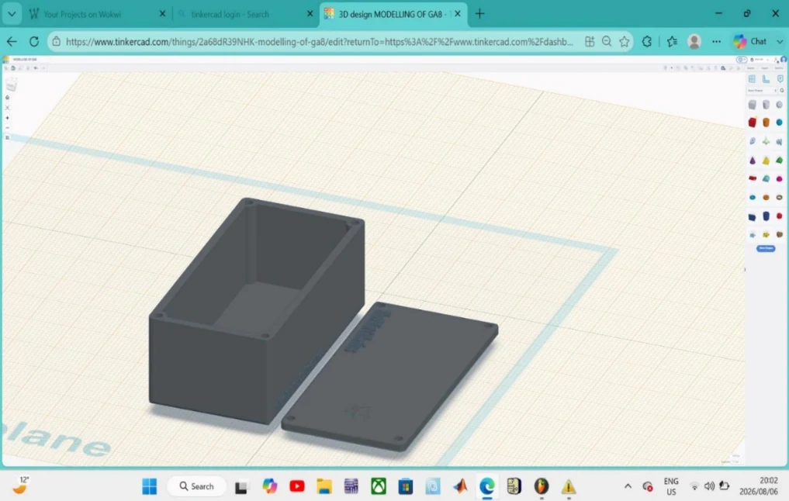

Skills demonstrated
3D CAD visualisation, presenting an engineering design from multiple viewpoints and communicating enclosure geometry.
Collaborative enclosure CAD project documented through final, isometric, front, side and top views.

Cover combines an original submitted engineering design image with portfolio typography.
GA8 documents a collaborative 3D enclosure design. The submitted CAD screenshots illustrate the enclosure model and four complementary views: isometric, front, side and top. The images show the intended form, a raised enclosure section and a base surface for the associated control-board project.
3D CAD visualisation, presenting an engineering design from multiple viewpoints and communicating enclosure geometry.
Only screenshots and a short PDF submission were included. The archive does not contain an editable model, STL, dimensional manufacturing drawing or measured enclosure fit.
Switch between the five actual CAD images from the report.

Group project acknowledgement: Neziswa Jokazi, Nnete Thapedi Teise, Thabo Morabe and Nelissa Yana. Individual task ownership was not specified in the documents.
These pages describe the supplied coursework. Portfolio viewers and budget calculations are browser-based reconstructions, not manufacturing tests or live hardware measurements.